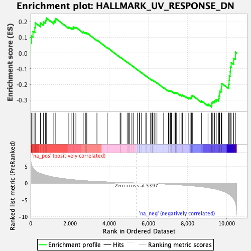
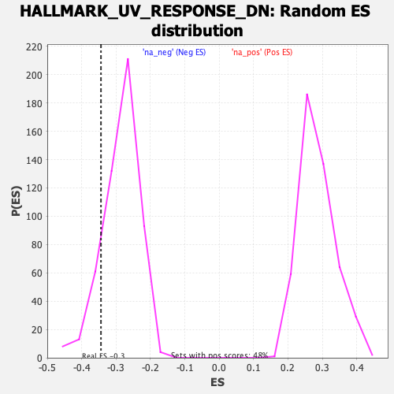

| Dataset | qlf.KOd4vsWTd4_gsea_score |
| Phenotype | NoPhenotypeAvailable |
| Upregulated in class | na_neg |
| GeneSet | HALLMARK_UV_RESPONSE_DN |
| Enrichment Score (ES) | -0.34409308 |
| Normalized Enrichment Score (NES) | -1.2039372 |
| Nominal p-value | 0.12452107 |
| FDR q-value | 0.32116887 |
| FWER p-Value | 0.968 |

| SYMBOL | RANK IN GENE LIST | RANK METRIC SCORE | RUNNING ES | CORE ENRICHMENT | |
|---|---|---|---|---|---|
| 1 | RXRA | 4 | 7.803 | 0.0657 | No |
| 2 | PRKCA | 46 | 5.457 | 0.1080 | No |
| 3 | SLC7A1 | 120 | 4.466 | 0.1388 | No |
| 4 | NRP1 | 215 | 3.875 | 0.1626 | No |
| 5 | NOTCH2 | 235 | 3.735 | 0.1924 | No |
| 6 | ATXN1 | 500 | 2.837 | 0.1911 | No |
| 7 | ZMIZ1 | 657 | 2.496 | 0.1973 | No |
| 8 | BHLHE40 | 751 | 2.328 | 0.2081 | No |
| 9 | NFKB1 | 798 | 2.260 | 0.2228 | No |
| 10 | MYC | 1183 | 1.748 | 0.2008 | No |
| 11 | MRPS31 | 1244 | 1.683 | 0.2093 | No |
| 12 | BCKDHB | 1283 | 1.649 | 0.2196 | No |
| 13 | ABCC1 | 1949 | 1.115 | 0.1653 | No |
| 14 | PDLIM5 | 2105 | 1.005 | 0.1589 | No |
| 15 | MTA1 | 2172 | 0.972 | 0.1608 | No |
| 16 | MIOS | 2202 | 0.959 | 0.1662 | No |
| 17 | ATRX | 2309 | 0.890 | 0.1635 | No |
| 18 | ANXA4 | 2681 | 0.726 | 0.1341 | No |
| 19 | PEX14 | 2792 | 0.676 | 0.1293 | No |
| 20 | SPOP | 2863 | 0.644 | 0.1280 | No |
| 21 | DBP | 3382 | 0.466 | 0.0823 | No |
| 22 | TFPI | 3902 | 0.317 | 0.0352 | No |
| 23 | PRKAR2B | 4563 | 0.151 | -0.0268 | No |
| 24 | ATP2C1 | 4607 | 0.143 | -0.0298 | No |
| 25 | ATP2B4 | 4924 | 0.085 | -0.0593 | No |
| 26 | CDK13 | 4985 | 0.073 | -0.0645 | No |
| 27 | GRK5 | 5048 | 0.061 | -0.0699 | No |
| 28 | VAV2 | 5165 | 0.041 | -0.0807 | No |
| 29 | RASA2 | 5258 | 0.026 | -0.0893 | No |
| 30 | WDR37 | 5448 | -0.007 | -0.1074 | No |
| 31 | YTHDC1 | 5542 | -0.022 | -0.1161 | No |
| 32 | CELF2 | 5551 | -0.023 | -0.1167 | No |
| 33 | NEK7 | 5658 | -0.040 | -0.1265 | No |
| 34 | ITGB3 | 5874 | -0.075 | -0.1465 | No |
| 35 | APBB2 | 5912 | -0.082 | -0.1493 | No |
| 36 | AGGF1 | 6116 | -0.118 | -0.1678 | No |
| 37 | DLG1 | 6179 | -0.129 | -0.1727 | No |
| 38 | MAPK14 | 6208 | -0.136 | -0.1742 | No |
| 39 | MGMT | 6218 | -0.138 | -0.1739 | No |
| 40 | NR3C1 | 6295 | -0.154 | -0.1799 | No |
| 41 | CDON | 6343 | -0.163 | -0.1830 | No |
| 42 | NIPBL | 6442 | -0.187 | -0.1908 | No |
| 43 | SFMBT1 | 6785 | -0.270 | -0.2214 | No |
| 44 | AKT3 | 7025 | -0.336 | -0.2414 | No |
| 45 | DYRK1A | 7051 | -0.342 | -0.2409 | No |
| 46 | MAP2K5 | 7100 | -0.358 | -0.2425 | No |
| 47 | ARHGEF9 | 7128 | -0.366 | -0.2420 | No |
| 48 | PTPN21 | 7182 | -0.380 | -0.2439 | No |
| 49 | PRKCE | 7313 | -0.422 | -0.2528 | No |
| 50 | SRI | 7379 | -0.445 | -0.2552 | No |
| 51 | PIK3R3 | 7390 | -0.448 | -0.2524 | No |
| 52 | SCAF8 | 7447 | -0.467 | -0.2538 | No |
| 53 | FHL2 | 7613 | -0.532 | -0.2651 | No |
| 54 | ATRN | 7712 | -0.574 | -0.2697 | No |
| 55 | SMAD7 | 7747 | -0.591 | -0.2679 | No |
| 56 | INSIG1 | 7921 | -0.661 | -0.2789 | No |
| 57 | PRDM2 | 8066 | -0.721 | -0.2866 | No |
| 58 | DUSP1 | 8135 | -0.755 | -0.2868 | No |
| 59 | PHF3 | 8184 | -0.777 | -0.2848 | No |
| 60 | INPP4B | 8194 | -0.786 | -0.2790 | No |
| 61 | LDLR | 8215 | -0.796 | -0.2742 | No |
| 62 | ACVR2A | 8248 | -0.816 | -0.2703 | No |
| 63 | GCNT1 | 8710 | -1.095 | -0.3053 | No |
| 64 | SIPA1L1 | 9047 | -1.351 | -0.3261 | No |
| 65 | NR1D2 | 9236 | -1.560 | -0.3309 | Yes |
| 66 | CACNA1A | 9238 | -1.560 | -0.3178 | Yes |
| 67 | CDKN1B | 9292 | -1.611 | -0.3092 | Yes |
| 68 | FYN | 9380 | -1.708 | -0.3031 | Yes |
| 69 | PIAS3 | 9466 | -1.824 | -0.2958 | Yes |
| 70 | PTEN | 9580 | -2.009 | -0.2896 | Yes |
| 71 | ATP2B1 | 9606 | -2.054 | -0.2746 | Yes |
| 72 | ANXA2 | 9637 | -2.100 | -0.2597 | Yes |
| 73 | IGF1R | 9651 | -2.125 | -0.2430 | Yes |
| 74 | CITED2 | 9716 | -2.255 | -0.2300 | Yes |
| 75 | PIK3CD | 9734 | -2.289 | -0.2122 | Yes |
| 76 | TGFBR3 | 9750 | -2.332 | -0.1939 | Yes |
| 77 | SMAD3 | 10096 | -3.244 | -0.1995 | Yes |
| 78 | PLCB4 | 10120 | -3.356 | -0.1733 | Yes |
| 79 | SYNJ2 | 10132 | -3.382 | -0.1457 | Yes |
| 80 | RUNX1 | 10175 | -3.543 | -0.1198 | Yes |
| 81 | KIT | 10186 | -3.625 | -0.0900 | Yes |
| 82 | TGFBR2 | 10227 | -3.823 | -0.0615 | Yes |
| 83 | SYNE1 | 10354 | -4.703 | -0.0337 | Yes |
| 84 | ADD3 | 10441 | -5.713 | 0.0064 | Yes |
